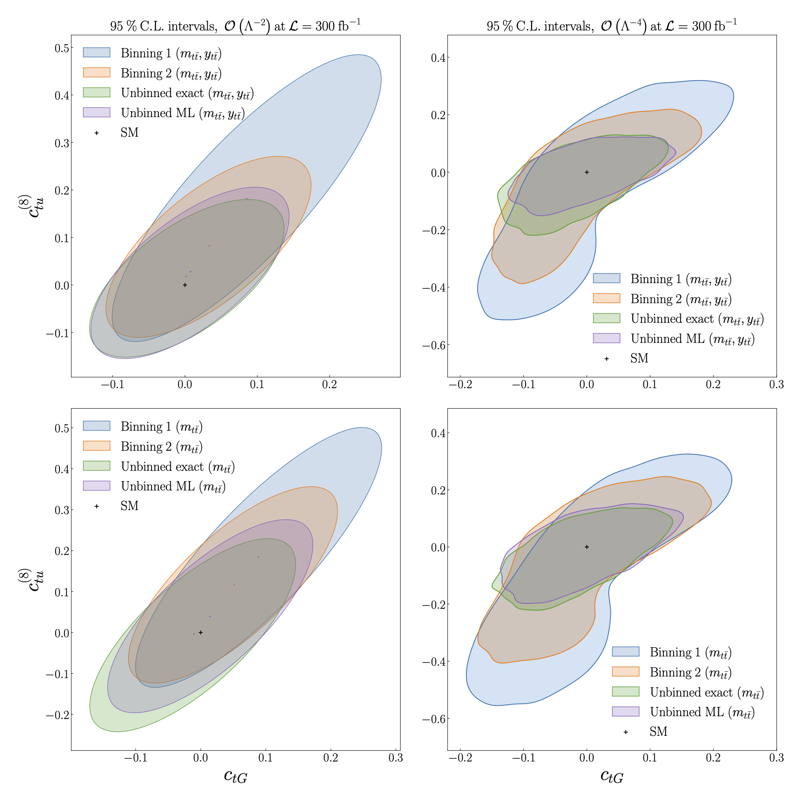

Constraints on the SMEFT
Constraints on the SMEFT#
We compare the constraints on \(C_{tu}^{(8)}\) and \(C_{tG}\) at 95% CL obtained from a binned analysis to those obtained from the unbinned ML model.
In the upper plots we make use of two features: the invariant mass \(m_{t \bar{t}}\) and rapidity \(y_{t \bar{t}}\) of the top quark pair. In the lower plots we use a single feature, \(m_{t \bar{t}}\).
Two sets of binnings are used:
Binning 1:
Binning 2:
In the left plots, we obtain constraints by working to linear order \(O(\Lambda^{-2})\) in the EFT calculation. In the right plots we work to quadratic order \(O(\Lambda^{-4})\).
In general, we find an improvement in the constraints obtained using the unbinned ML model compared to the binned analysis, as well as good agreement between the ML model and exact calculation.